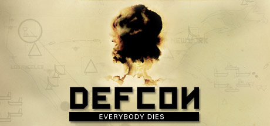

DEFCON
 Games with body counts that reach into the hundreds are as common as a Capcom game with zombies in it but how many games can you name which boast a kill count in the tens of millions? Cities are wiped from the face of the planet, entire continents are crushed by nuclear onslaught and the Earth's population is decimated as six superpowers wage war on each other. Everybody dies. That, in a nutshell, is DEFCON, the explosive new strategy game from Introversion - the developer behind the critically-adored Darwinia and lesser-known, but equally brilliant, Uplink. The aim of the game is simple: cause mass destruction on a global scale by launching nuclear attacks on rival superpowers while, at the same time, protecting your own borders from enemy strikes. Refreshingly, it's as easy to play as it is to explain, with many of the elements that tend to overcomplicate strategy games - such as resource management - stripped away to shift focus onto killing every last living, breathing person on the planet. However, before the bloodbath begins, the conditions of war must first be determined. There are six superpowers fighting for global domination, these being Asia, Russia, North America, South America, Africa and Europe. Players each choose a faction to side with and the remaining powers are either allocated to CPU players or left out of the game entirely. As such there's tremendous scope for playing DEFCON on a number of levels, from straightforward one-on-one conflicts - an obvious starting point for new players - to six-player all-against-all bun fights best left for those who know their silos from their subs.System Requirements:
Recommended:- Windows XP
- P3-600-Geforce 2
- 128 Mb RAM
- 60 Mb Hard Disk
- Internet connection for multiplayer games
RATING